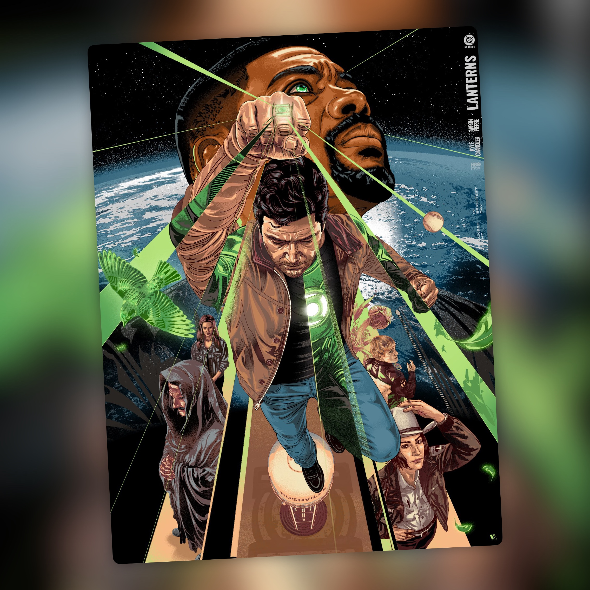

Lanterns — T1 (2026)
Don’t be afraid to be afraid de ser un Linterna Verde

⚠️ SPOILERS DEL FINAL DE LA TEMPORADA
Lanterns me ha gustado mucho. Todo empieza con Hal Jordan y John Stewart investigando lo ocurrido en Rashville. Parece un caso más, pero poco a poco se va haciendo bastante más grande. La historia se toma su tiempo para construir el misterio y, sobre todo, para que conozcamos a Hal y John y entendamos la relación que se va formando entre ellos. Y el primer episodio acaba con un cliffhanger bastante potente: la muerte de Hal Jordan.
A mí me ha funcionado muy bien esa parte. No necesitaba que el misterio tuviera un giro imposible de adivinar. De hecho, la resolución me ha parecido bastante predecible, pero también satisfactoria. Me ha interesado más ver cómo iban encajando las piezas y qué consecuencias tenía todo para los personajes que intentar descubrir a toda costa quién estaba detrás de lo ocurrido.
Y creo que ahí está una de las claves de la serie: los guiones. Están muy bien escritos y, además, la serie está fantásticamente actuada, sobre todo por Kyle Chandler y Kelly Macdonald.
Kyle Chandler y Aaron Pierre son dos de las grandes razones por las que la serie me ha gustado tanto. Me gusta la relación entre Hal y John. Hal es un veterano que lleva demasiados años haciendo esto y que ve las cosas de una forma muy distinta a la de John, que todavía está intentando encontrar su sitio y aprender de alguien que, a la vez, tiene bastantes cosas que él no comparte. El episodio 3, cuando conocemos más del pasado de John, ayuda mucho a entender de dónde viene y por qué es como es. Con Hal ocurre algo parecido más adelante, especialmente en el episodio 7, cuando conocemos mejor su pasado y por fin entendemos muchas de las cosas que explican su forma de ser.
Hal y John se van entendiendo poco a poco, chocan y acaba importándote lo que les pasa a los dos. Buena parte de la serie se sostiene porque quieres seguir viéndolos juntos, incluso cuando la historia se aleja de los anillos y de lo más superheroico.
Los tres últimos episodios son los que mejor enseñan qué tipo de serie quiere ser Lanterns. Después de lo ocurrido en Rashville damos un salto de diez años y encontramos a Hal Jordan fuera de la cárcel. A partir de ahí, la serie se centra en todo lo que ha ocurrido durante ese tiempo y en las consecuencias que tiene para los personajes.
El último episodio apuesta casi por completo por los personajes y por las conversaciones. Tenemos a John hablando con Noah y a Kerry hablando con John. Durante esa conversación, en un flashback, descubrimos que fue ella quien disparó a Hal. Después vemos a John dejándole las cosas claras a Guy Gardner y, finalmente, a John frente al holograma de Hal.
No hay una gran batalla ni una sucesión de escenas de acción para cerrar la temporada. Todo se resuelve a través de estos personajes y de las cuentas pendientes que arrastran. Y cuando John está frente al holograma de Hal, este le dice: “Don’t be afraid to be afraid”. Me encanta esa frase.
Aquí está mi principal pega. Lanterns parece tener miedo de su propio origen en los cómics. Es una serie de Linterna Verde en la que, en esos tres últimos episodios, prácticamente no hay acción y el anillo apenas se utiliza. Entiendo perfectamente las críticas de quien esperaba otra cosa. A mí no me ha molestado tanto porque los guiones y los personajes me parecen lo bastante buenos para sostener esos episodios, pero tengo la sensación de que la serie quería ser cualquier cosa menos una serie de Green Lantern. Hay mucho drama, misterio y gente hablando de lo que les ha pasado, y bastante menos de lo que uno espera cuando le dicen que va de Linterna Verde.
Y creo que esa misma sensación se ve también en la estructura. Para mí son casi dos temporadas metidas en una. La primera va del episodio 1 al 5 y cuenta una historia prácticamente completa. Después llega el salto de diez años y, del 6 al 8, empieza otra historia alrededor de la muerte de Hal y de todo lo que ha pasado durante ese tiempo.
Solo quedan tres episodios para contarla. Los personajes y los guiones tienen fuerza para sostenerla, pero el cambio se nota muchísimo. Es como si la serie hubiera decidido contar dos historias distintas y la segunda hubiera tenido que apretarse en el último tramo.
Espero que, si hay segunda temporada, se atrevan un poco más con los cómics y con todo lo que significa hacer una serie de Linterna Verde.
Ficha técnica
- Título original: Lanterns
- Creada por: Chris Mundy, Damon Lindelof y Tom King
- Showrunner: Chris Mundy
- Reparto principal: Kyle Chandler, Aaron Pierre, Kelly Macdonald, Garret Dillahunt, Poorna Jagannathan, Laura Linney, Jason Ritter, Ulrich Thomsen, Nathan Fillion
- Temporadas: 1 (8 episodios, 2026)
- Plataforma(s) actual(es) en España: HBO Max